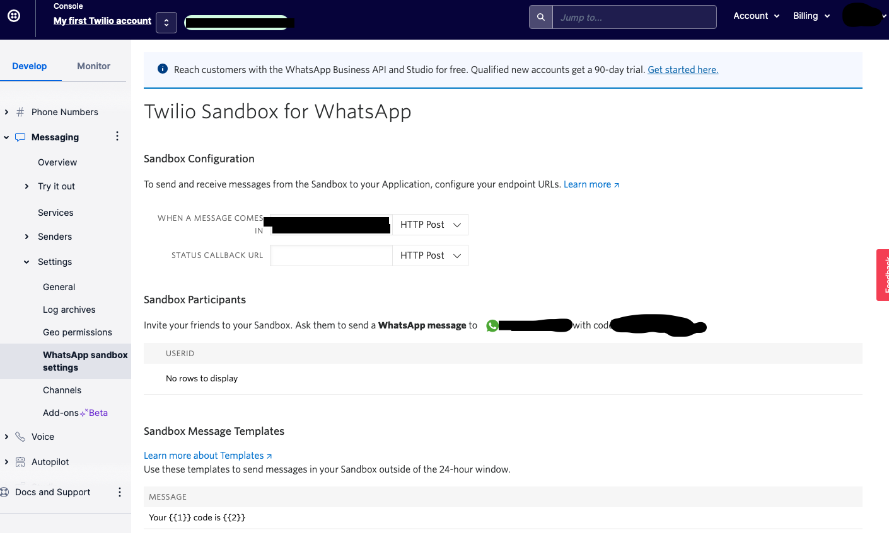

Repository designed for Tech for Justice Challenge #3787 - Empowering minority communities by enhancing financially local practices with AI
View the Project on GitHub IBM/customized-voice-text-bot-for-whatsapp-telegram
In this tutorial you will learn how to deploy our Python Flask bot app with Code Engine that uses an image located at Container Registry, a private repository for applications images. Please follow these following subsections in order, to deploy the app on Code Engine.
Code Engine (CE) is a PaaS (Platform as a Service) that attempts to make cloud deployment simple, when compared to using virtual machines. As you will see in this page, the process of deploying an app on Code Engine is not too long. CE handles and hides all cluster provisioning, configuring, scaling, and managing servers. Also, CE auto-scales workloads up/down or to zero when no requests are active.
This tutorial will take you through the deployment process, which will be done mostly with the IBM Cloud CLI (Command Line Interface), while using the IBM Cloud console to check the work. Code Engine has a free usage amount that should let us deploy the chatbot for testing purposes. This is the official CE documentation. This is the documentation for specifc CE commands using the IBM Cloud CLI.
To deploy the app successfully, please ensure that you have these components ready:
Cloning this repository should take care of the files and folders set-up. Locally, you need to create a virtual environment (venv), install the requirements, and set up a .env file in the folder src/.
This is how you can create a venv, activate, and install the requirements:
$ python3 -m venv <name_of_virtualenv> $ pip install -r requirements.txt To create and set up the .env file, you can use VS Code or your favorite terminal text editor. We will need these environment variables to build the Docker Image and deploy the app:
This is how the .env file should look like:
The following content will walk through deploying the app using the CLI. It is loosely based on this tutorial. To facilitate the distribution of the application and it's deployment to Code Engine, it is strongly recommended to containerize the application source code together with all of the related configuration files, libraries, and dependencies required for it to run. Access this IBM page to find more information about containerization.
The first thing to do when you want to generate a image of an application is to choose the tool that you will use to do it. There are many container runtime tools like Docker and Podman. In this tutorial we will going to use Docker.
Docker is a platform for "developing, shipping, and running applications." (Docker documentation). Docker containers give the ability to package an application and share it with others, without needing too much work on setting up environments. Containers can also run on a variety of environments, making it suitable for quickly deploying the chatbot on the cloud.
With the previous steps being concluded successfully, open the terminal in the project main folder and execute the following commands:
$ ibmcloud login$ ibmcloud login --sso. $ ibmcloud target -g Defaultibmcloud resources$ ibmcloud cr loginibmcloud plugin install cr.$ ibmcloud cr namespace-add <my-namespace><image-link>: <registry-address>/<my-namespace>/<my-repository>:<my-tag>$ docker build --tag <image-link> .$ docker push <image-link>Done! Now you are ready to deploy the web application to Code Engine.
Once we logged on IBM Cloud CLI previously, these are the main steps to deploying the app to CE:
$ ibmcloud ce proj create -name <proj-name>$ ibmcloud iam api-key-create <api_key_name> --file <file_name_to_save.txt>apikey value from the json.$ ibmcloud ce proj select -name <proj-name>$ ibmcloud ce registry create --name <registry-access> --server <registry-address> --username iamapikey --password <paste apikey>$ ibmcloud ce app create --n <app-name> --image <image-link> --registry-secret <registry-access>$ ibmcloud ce app get -n <app-name> -output url
Congratulations! You have deployed the application to cloud!
Ps: This process can be made by IBM Cloud console if you prefer.
Then navigate to your WhatsApp Sandbox settings:
You should be able to see a screen just like this one:
Then you should copy and paste your ngrok url in the box "WHEN A MESSAGE COMES IN". Append the path "/chatbot-message" to your url too - so the final url that goes in that box should be similar to https://<app-name>.____.us-south.codeengine.appdomain.cloud/chatbot-message. All other settings can be left as the default.
After this is done, you now should be able to interact with the bot on WhatsApp. Yeeey!
To interact with the bot, send the Sandbox code from an WhatsApp account to the Sandbox number, avaliable in the same page you paste the application URL. Then, start talking to the machine by texting or recording a "Hi" or "Hey".
Of course, there should also be a working Watson Assistant dialog skill attached to your Watson Assistant assistant (that correlates with WATSON_ASSISTANT_ID) in order for you to receive sensible responses from the app.
There are helpful pages on the Twilio console that can help you to identify errors. We recommend you to explore Twilio Console and learn more about the process and the interaction between user and bot.
You can also monitor bot activity through Cloudant database and access the media files sent and received by the bot in the Cloud Object Storage bucket you create.